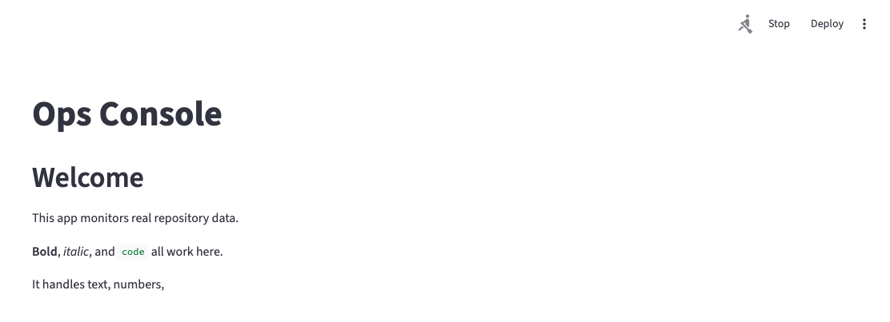
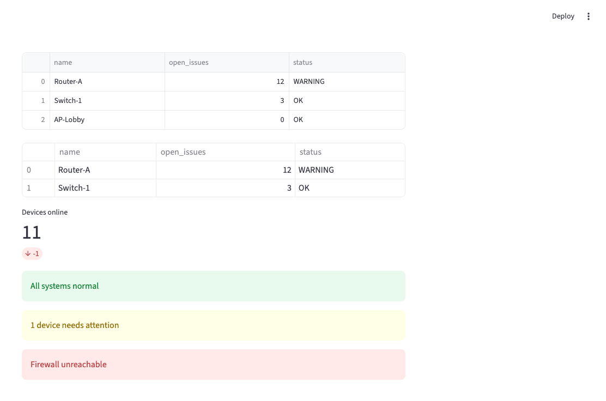
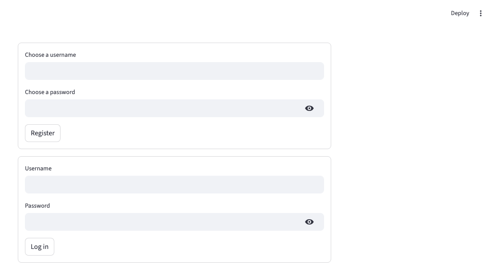
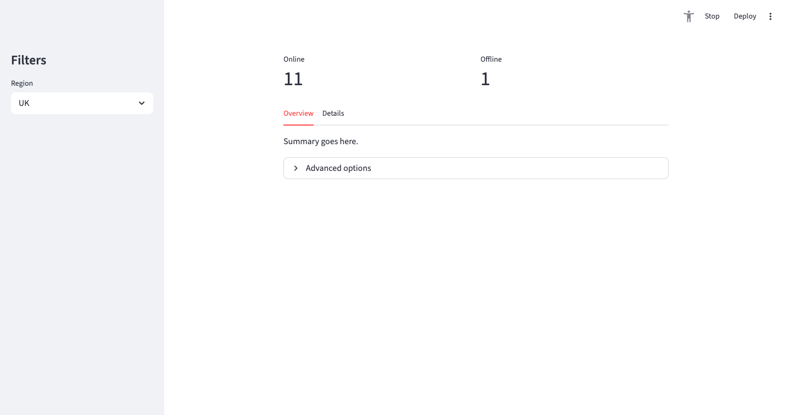

Week 11 — Streamlit Dashboard
By the end of this week you can explain Streamlit's rerun model — every interaction reruns the whole script, display data with st.dataframe(), st.metric(), and filter it live with widgets, and use st.session_state to remember things a plain variable would lose on rerun.
Box we build this week: OUTPUT, for someone else — see ../system_diagram.md. Each Practice below sets a short task.
This page combines the week's walkthrough notebooks into one reading view, keeping the theory in teaching order.
Your First App
Everything before now ran in a terminal, for you. This week: a page, in a browser, for anyone.
Already know this? Skip to the Topic 1 Challenge.
These cells show Streamlit code for reading, the way every walkthrough has — but Streamlit pages only really come alive with
streamlit run. Try each idea by running the matchingexamples/file that way, not by executing these cells directly.
Official docs: Streamlit get started · st.write
1.st.title, st.write — the basics

Run with streamlit run, not python — a plain Python run will not show
you a page.
import streamlit as st
st.title("Ops Console")
st.write("This app monitors real repository data.")In examples/01_your_first_app.py, add your own title and two st.write() calls, then run it with streamlit run.
2.Every st. call draws one element, top to bottom
Your script runs like a normal file — each line that calls Streamlit adds one more thing to the page, in order.
st.write("This line...")
st.write("...comes after the one above, exactly like the code.")Predict, then check: what order do three st.write() calls appear in on the page?
3.The rerun model — the one idea the rest of the week depends on
Every interaction — a click, a typed character, a slider drag — reruns your entire script, from the top.
name = st.text_input("Your name")
if st.button("Scan now"):
st.write("Scanning...")you click a button
│
▼
the WHOLE script runs again, top to bottom
│
▼
Streamlit redraws the page with the new valuesAdd a st.slider() and a st.write() showing its value — move it and watch the whole page redraw.
4.The catch: plain variables reset on every rerun
st.session_state is the one thing that survives a rerun — everything else
starts fresh, every time.
if "count" not in st.session_state:
st.session_state.count = 0
if st.button("Add one"):
st.session_state.count += 1
st.write("Total:", st.session_state.count)In examples/02_widgets_and_reruns.py, add a second counter that decreases, using its own session_state key.
Challenge
Build a page with a text input, a button, and a session_state counter that
increases every time the button is clicked — the input's current value
should still show correctly after each click.
Same idea, three fields
| Field | Looks like |
|---|---|
| AI / Data Science | a dashboard someone can open without running any Python themselves |
| Cyber Security | an incident console a non-technical colleague can actually use |
| IT | a status page anyone on the team can check, not just you |
Common mistakes
| Mistake | What you see | Fix |
|---|---|---|
running with python file.py |
nothing happens, or a bare warning — no page | use streamlit run file.py |
| expecting a plain variable to remember a value across clicks | it resets to its initial value every rerun | use st.session_state instead |
| assuming only the clicked widget's code re-runs | the WHOLE script runs again, every time | design around full reruns, not partial updates |
| being surprised errors appear in the browser | looking at the terminal and seeing nothing new | Streamlit renders exceptions on the page itself |
Go deeper
examples/01_your_first_app.py — title, write, markdown, the basics
examples/02_widgets_and_reruns.py — widgets, the rerun model, session_state
Docs: Streamlit documentation
Recap
| You can now | Using |
|---|---|
| show text and data | st.title(), st.write() |
| run the page | streamlit run file.py |
| explain the rerun model | the whole script runs again, every interaction |
| remember something across reruns | st.session_state |
Next: Topic 2 — showing real data, and letting someone filter it.
Displaying Data and Widgets
Turning a DataFrame into something readable, and a widget's return value into a live filter.
Already know this? Skip to the Topic 2 Challenge.
These cells show Streamlit code for reading, the way every walkthrough
has — but Streamlit pages only really come alive with
streamlit run.
Try each idea by running the matching
examples/file that way, not by
executing these cells directly.
Official docs: st.dataframe · Widgets API
1.st.dataframe, st.table, st.metric

st.dataframe(df) # interactive, sortable
st.table(df.head(2)) # static, simpler
st.metric("Devices online", 11, delta=-1)Build a small DataFrame of your own and display it with st.dataframe().
2.Status messages — colour-coded, instantly readable
st.success("All systems normal")
st.warning("1 device needs attention")
st.error("Firewall unreachable")Show a metric for how many rows in your DataFrame are flagged, then pick the right status message based on whether that count is 0.
3.A widget's return value filters the DataFrame
The core pattern behind almost every dashboard — build the options from the data itself, not by hand.
options = ["all"] + sorted(df["type"].unique())
chosen = st.selectbox("Type", options)
filtered = df if chosen == "all" else df[df["type"] == chosen]
st.dataframe(filtered)Add a slider that filters your DataFrame to rows above a chosen numeric threshold.
4.A checkbox toggling what's shown
show_only_flagged = st.checkbox("Show only flagged")
st.dataframe(df[df["open_issues"] > 0] if show_only_flagged else df)Add a text input that filters rows by name, case-insensitively.
Challenge
Combine a selectbox and a slider into one filter over the same
DataFrame, and show a st.metric() of how many rows matched both
conditions.
Same idea, three fields
| Field | Looks like |
|---|---|
| AI / Data Science | filtering a dataset by category before showing summary stats |
| Cyber Security | filtering incidents by severity |
| IT | filtering devices by type or status |
Common mistakes
| Mistake | What you see | Fix |
|---|---|---|
| hard-coding selectbox options that drift from the real data | options that no longer match what is actually there | build options from df["col"].unique() |
filtering with and/or on a Series (Week 6's lesson, still true here) |
ValueError |
use &/\|, brackets round each side |
| forgetting a checkbox/slider already IS the filter — no button needed | an unnecessary extra click | the rerun happens automatically on every widget change |
calling st.dataframe() on an empty filtered result with no message |
a blank-looking page, confusing | show a message when the filter matches nothing |
Go deeper
examples/01_displaying_data.py — dataframe, table, metric, status messages
examples/02_input_widgets_and_filtering.py — selectbox, slider, checkbox, live filtering
Recap
| You can now | Using |
|---|---|
| show a DataFrame | st.dataframe(), st.table() |
| show a headline number | st.metric() |
| filter live from a widget | the widget's return value, in an if |
| build options from real data | df["col"].unique() |
Next: Topic 3 — putting your login behind a real form.
Wiring In Your Login
Week 9's register_user/login_user, as a real web form — and a page that
will not show its contents to anyone who has not logged in.
Already know this? Skip to the Topic 3 Challenge.
These cells show Streamlit code for reading, the way every walkthrough
has — but Streamlit pages only really come alive with
streamlit run.
Try each idea by running the matching
examples/file that way, not by
executing these cells directly.
Official docs: st.form · st.session_state
1.st.form() — batch inputs, nothing reruns until submit

Without a form, every keystroke reruns the whole script. Inside a form, nothing happens until the submit button is pressed.
with st.form("register_form"):
username = st.text_input("Username")
password = st.text_input("Password", type="password")
submitted = st.form_submit_button("Register")
if submitted:
st.success(f"Registered {username}.")Build a form with two inputs and a submit button, and show a success message using the values once submitted.
2.Wiring in real bcrypt — Week 9, inside a form now
import bcrypt
def login(username, password, users):
hashed = users.get(username)
if hashed is None:
return False
return bcrypt.checkpw(password.encode(), hashed)
# same function as Week 9 - only what CALLS it has changedIn examples/01_forms_and_session_state.py, register a user through the form, then log in as them.
3.Storing the login result in session_state
The same pattern as Topic 1's counter — logged_in needs to survive every
rerun after the click, not just the one that set it.
if "logged_in" not in st.session_state:
st.session_state.logged_in = False
if login_submitted and login(username, password, users):
st.session_state.logged_in = True
st.rerun()Explain, in one sentence, why st.rerun() is called immediately after setting logged_in = True.
4.Protecting a page — st.stop()
Everything after st.stop() never runs, for a logged-out user.
def require_login():
if not st.session_state.logged_in:
st.warning("Please log in to see this page.")
st.stop()
require_login()
st.title("Protected Dashboard")In examples/02_protecting_a_page.py, confirm the dashboard is hidden when logged out and appears once logged in.
Challenge
Combine a register form and a login form on one page. After a successful
login, hide both forms and show a protected message using st.stop().
Same idea, three fields
| Field | Looks like |
|---|---|
| AI / Data Science | gating a shared dataset behind sign-in |
| Cyber Security | the exact login your incident console's own users go through |
| IT | restricting a monitoring dashboard to authorised staff |
Common mistakes
| Mistake | What you see | Fix |
|---|---|---|
a widget outside st.form() causing reruns on every keystroke |
laggy, jumpy typing | move related inputs inside one st.form() |
forgetting st.rerun() after setting logged_in = True |
the page does not update until the next unrelated interaction | call st.rerun() right after the state change |
| checking login state after already showing protected content | a flash of content before the gate | check and st.stop() at the very top of the page |
StreamlitAPIException: form_submit_button() must be used inside a form |
exactly what it says | make sure the button is indented inside the with st.form(...) block |
Go deeper
examples/01_forms_and_session_state.py — the full register/login flow, as a form
examples/02_protecting_a_page.py — st.stop(), gating content on session_state
Recap
| You can now | Using |
|---|---|
| batch form inputs | st.form() / st.form_submit_button() |
| wire in real auth | Week 9's functions, called from the form |
| remember login state | st.session_state.logged_in |
| hide content until logged in | st.stop() |
Next: Topic 4 — organising the page, and shipping it.
Layout, Caching and Deployment
A page with more than one thing on it needs structure. And once it works locally, someone else needs to be able to open it.
Already know this? Skip to the Topic 4 Challenge.
These cells show Streamlit code for reading, the way every walkthrough
has — but Streamlit pages only really come alive with
streamlit run.
Try each idea by running the matching
examples/file that way, not by
executing these cells directly.
Official docs: Layout API · st.cache_data · Deploy your app
1.Columns, sidebar, tabs, expander

left, right = st.columns(2)
left.metric("Online", 11)
right.metric("Offline", 1)
st.sidebar.selectbox("Region", ["UK", "EU", "US"])
tab1, tab2 = st.tabs(["Overview", "Details"])
tab1.write("Summary")
with st.expander("Advanced"):
st.write("Extra options")Put two st.metric() calls side by side using st.columns(2).
1b.Page title, and a quick chart
st.set_page_config() sets the browser tab's title — call it once, as the very first Streamlit command in the file, before anything else runs. st.bar_chart() turns a DataFrame straight into a chart, no separate plotting library needed.
st.set_page_config(page_title="My Dashboard")
chart_data = pd.DataFrame(
{"open_issues": [4, 1, 9]}, index=["repo-a", "repo-b", "repo-c"]
)
st.bar_chart(chart_data)Add st.set_page_config(page_title=...) as the first line of a page of your own, then draw one of its numeric columns with st.bar_chart().
1c.Two widgets that look identical need a key
Streamlit tracks each widget by its type, label and position on the page. Two st.button("Click me") calls with the same label crash with StreamlitDuplicateElementId — give each one a unique key= (or vary the label) so Streamlit can tell them apart.
st.button("Click me", key="click_left")
st.button("Click me", key="click_right")Reproduce the crash on purpose: put two identical st.button("Click me") calls on the same page with no key=. Read the error Streamlit shows on the page, then fix it by adding a different key= to each.
2.@st.cache_data — slow work runs once, not on every rerun
@st.cache_data
def slow_load(n):
time.sleep(1) # pretend this is a real, slow load
return pd.DataFrame({"x": range(n)})
df = slow_load(5) # slow once, instant after, for this same nAdd your own cached function and confirm it is only slow on its first call.
3.Secrets — st.secrets, the Streamlit-flavoured version of Week 9's os.environ
# .streamlit/secrets.toml (never committed):
# OPENAI_API_KEY = "sk-..."
#
# api_key = st.secrets["OPENAI_API_KEY"]
print("see the comment - nothing to run here")Write what your own .streamlit/secrets.toml would contain, without actually putting a real key in it.
4.Deploying — the real steps
Push to GitHub, add requirements.txt, add secrets and .db files to
.gitignore, connect the repo on share.streamlit.io.
Write a requirements.txt for your own project, listing every library you actually import.
Challenge
Take a page you have already built this week and organise it with at least
one st.columns() and one st.sidebar element. Add one @st.cache_data
function if you do not already have one.
Same idea, three fields
| Field | Looks like |
|---|---|
| AI / Data Science | a sidebar of dataset filters, tabs per analysis view |
| Cyber Security | tabs separating incidents by severity, a cached feed refresh |
| IT | a sidebar of environment filters, columns of key metrics |
Common mistakes
| Mistake | What you see | Fix |
|---|---|---|
| reloading the same slow data on every rerun | the page feels sluggish on every click | @st.cache_data |
running with python app.py |
no page appears | streamlit run app.py |
committing .db or secrets.toml |
real secrets or user data in a public repo | .gitignore, before the first commit that includes them |
forgetting requirements.txt |
the deployed cloud app fails to even start | list every library you import |
| two widgets with the same type, label and position | StreamlitDuplicateElementId |
give each one a unique key= |
calling st.set_page_config() after other Streamlit output |
StreamlitAPIException |
it must be the very first Streamlit command in the file |
Go deeper
examples/01_layout_and_caching.py — columns, sidebar, tabs, expander, caching, page config, bar_chart, key=
examples/02_secrets_and_deployment.py — st.secrets, requirements.txt, the real deploy steps
Recap
| You can now | Using |
|---|---|
| organise a page | st.columns(), st.sidebar, st.tabs(), st.expander() |
| set the tab title, and chart a DataFrame | st.set_page_config(), st.bar_chart() |
| tell two identical widgets apart | key="..." |
| avoid re-doing slow work | @st.cache_data |
| keep a secret out of your code | st.secrets |
| deploy for real | GitHub + requirements.txt + share.streamlit.io |
You now have all of Week 11's OUTPUT. Turn your project into a real page in the lab — nothing about it resets.